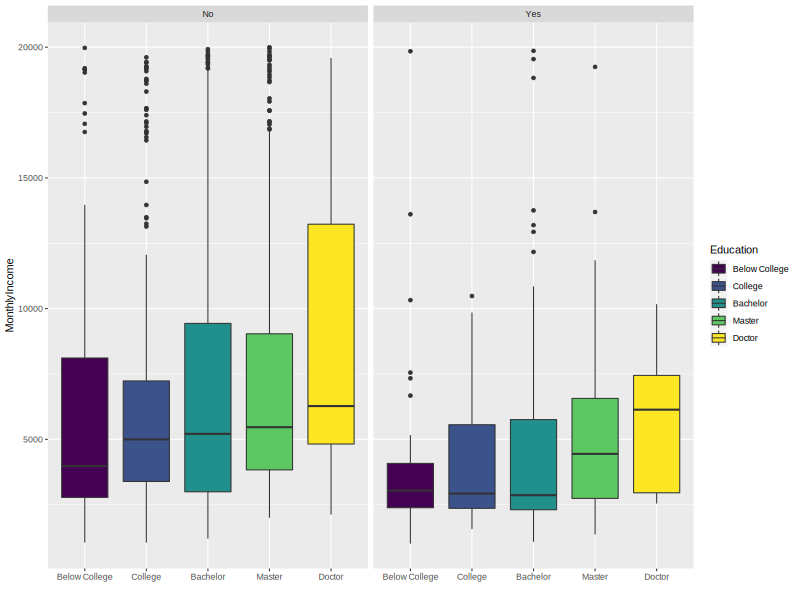

<!DOCTYPE HTML>
<!--
	Massively by HTML5 UP
	html5up.net | @ajlkn
	Free for personal and commercial use under the CCA 3.0 license (html5up.net/license)
-->
<html>
	<head>
		<title>Selena Chu Portfolio</title>
		<meta charset="utf-8" />
		<meta name="viewport" content="width=device-width, initial-scale=1, user-scalable=no" />
		<link rel="stylesheet" href="assets/css/main.css" />
		<noscript><link rel="stylesheet" href="assets/css/noscript.css" /></noscript>
	</head>
	<body class="is-preload">

		<!-- Wrapper -->
			<div id="wrapper">

				<!-- Header -->
					<header id="header">
						<a href="index.html" class="logo">Selena Chu Portfolio</a>
					</header>

				<!-- Nav -->
					<nav id="nav">
						<ul class="links">
							<li><a href="index.html">Projects</a></li>
							<li><a href="generic.html">About Me</a></li>
							<li class="active"><a href="elements.html">Regression Analysis</a></li>
						</ul>
						<ul class="icons">
							<li><a href="https://www.linkedin.com/in/selenapchu/" class="icon brands fa-linkedin-in" target="_blank" rel="noopener noreferrer"><span class="label">LinkedIn</span></a></li>
							<li><a href="https://github.com/selenapchu" class="icon brands fa-github" target="_blank" rel="noopener noreferrer"><span class="label">GitHub</span></a></li>
						</ul>
					</nav>

				<!-- Main -->
					<div id="main">

						<!-- Post -->
							<section class="post">
								<header>
									<h2>Employee Data Analysis</h2>
									<p>Programming Language: <strong>R</strong> <br /> Software: <strong>Visual Studio</strong>, <strong>RStudio</strong></p>
								</header>

								<!-- Text stuff -->
									<header><h4>Goal of the project</h4></header>
									<p>I want to build a model that can predict accurate employee attrition. I chose <B>Logistic Regression</B> because employee attrition is a binomial <i>Yes/No</i> attribute.

									<header>
										<h4>About the dataset</h4>
									</header>
									<p>It is a fictional dataset created by IBM data scientists. <br />
									Source: <a href="https://www.kaggle.com/datasets/whenamancodes/hr-employee-attrition" target="_blank" rel="noopener noreferrer">Kaggle.com</a></p>
									
									<header>
										<h4>Understanding the data</h4>
										<p>Some interesting insights from data visualizations</p>
									</header>
									<div class="box alt">
										<div class="row gtr-50 gtr-uniform">
											<div class="col-4"><span class="image fit"></span></div>
											<div class="col-4"><span class="image fit"></span></div>
											<div class="col-4"><span class="image fit"></span></div>
											<!-- Break -->
									<ul>
										<li>Employee turnover was the highest during the first three year after promotion.</li>
										<li>The top three most popular time to quit was the <b>second</b>, <b>third</b> and <b>fifth</b> year at the company.</li>
										<li>The number of employee attrition drastically decreased after <b>ten years</b> at the company.</li>
										<li>The median salary of employees who quit (grouped by departments) were lower compared to the ones who stay in the company.</li>
									</ul>
									<header>
										<h4>Data visualizations | ggplot</h4>
										<p>A simple walkthrough of the R code and results</p></header>
									<p>1. Read data in csv file<span class="image right"></span><br />
									<code>employee.df <- read.csv("HR Employee Attrition.csv", stringsAsFactors = TRUE)</code><br />
									2. Use <code>str()</code> function to take a look at the structure of the dataframe
									<code>str(employee.df)</code><br />
									<b>Result</b>: 1470 observations of 35 variables (see image right)</p>
										<!-- Break -->
									<p>3. Use package ggplot to create visualizations. First call the package <code>library(ggplot2)</code><br />
										<span class="image left"></span><b>Bar Chart 1.</b> Generate bar chart with <i>Years Since Last Promotion</i> as X-Axis and <i>Employee Count</i> as Y-Axis grouped By <i>Attrition</i> (No/Yes) <br />
										<code>ggplot(employee.df)+ geom_bar(aes(x= YearsSinceLastPromotion, fill= factor(YearsSinceLastPromotion)), stat= 'count')+ xlab("Years Since Last Promotion")+ ylab("Employee Count")+ facet_grid(cols= vars(Attrition))+ scale_fill_viridis_d("Years")</code></p>
										<!-- Break -->
									<p><span class = "image right"></span><b>Bar Chart 2.</b> Generate bar chart with <i>Years At Company</i> as X-Axis and <i>Employee Count</i> as Y-Axis grouped By <i>Attrition</i> (No/Yes) <br />
										<code>ggplot(employee.df)+ geom_bar(aes(x= YearsAtCompany, fill= factor(YearsAtCompany)), stat= 'count')+ xlab("Years At Company")+ ylab("Employee Count")+ facet_grid(cols= vars(Attrition))+ scale_fill_viridis_d("Years")</code></p>
										<!-- Break -->
									<p><span class ="image left"></span><b>Box Chart 1.</b> Generate box plot with <i>Department</i> as X-Axis and <i>Monthly Income</i> as Y-Axis grouped By <i>Attrition</i> (No/Yes) <br />
										<code>ggplot(employee.df)+ geom_boxplot(aes(x= Department, y= MonthlyIncome, fill= Department))+ xlab("Department")+ facet_grid(cols= vars(Attrition))</code></p>
									

									<header>
										<h4>Logistic Regression Model</h4>
										<p>Outcome Variable: Attrition (Yes/No) <br /> Predictors: Education, Environment Satisfaction, Job Involvement, Job Satisfaction, Performace Rating, Relationship Satisfaction, Work Life Balance, Business Travel, Distance From Home, Marital Status, Monthly Income, Number of Companies Worked, Over Time, Total Working Years, Training Time Last Year, Years At Company, Years In Current Role, Years Since Last Promotion, Years With Current Manager</p>
									</header>
									<p><strong>Preprocessing the data</strong><br />
									1. Re-code the target variable <i> Attrition</i> to indicate <i>Attrition = Yes</i> is <b>Class 1</b> using <code>as.numeric()</code> function in R.<br />
									<code>employee.df$Attrition <- as.numeric(employee.df$Attrition == "Yes")</code></p>
									<p>2. Transform integer variables to factors. We cannot use INT variables directly because it will affect the computation of coefficient.
<pre><code>employee.df$Education <- factor(employee.df$Education)
employee.df$EnvironmentSatisfaction <- factor(employee.df$EnvironmentSatisfaction)
employee.df$JobInvolvement <- factor(employee.df$JobInvolvement)
employee.df$JobSatisfaction <- factor(employee.df$JobSatisfaction)
employee.df$PerformanceRating <- factor(employee.df$PerformanceRating)
employee.df$RelationshipSatisfaction <- factor(employee.df$RelationshipSatisfaction)
employee.df$WorkLifeBalance <- factor(employee.df$WorkLifeBalance)</code></pre></p>
									<p>Rename the levels in Order
<pre><code>levels(employee.df$Education) <- c("Below College", "College", "Bachelor", "Master", "Doctor")
levels(employee.df$EnvironmentSatisfaction) <- c("Low", "Medium", "High", "Very High")
levels(employee.df$JobInvolvement) <- c("Low", "Medium", "High", "Very High")
levels(employee.df$JobSatisfaction) <- c("Low", "Medium", "High", "Very High")
levels(employee.df$PerformanceRating) <- c("Low", "Good", "Excellent", "Outstanding")
levels(employee.df$RelationshipSatisfaction) <- c("Low", "Medium", "High", "Very High")
levels(employee.df$WorkLifeBalance) <- c("Bad", "Good", "Better", "Best")</code></pre></p>
									<p>3. Relevel <i>Martial Status</i> to ensure <i>'Single'</i> is the base level.<br />
									<code>employee.df$MaritalStatus <- relevel(employee.df$MaritalStatus, ref="Single")</code></p>
									
									<header>
										<h4>Fitting the logistic regression model</h4>
										<p>Set 1234 as the seed, selected predictors and outcome varialbes, and partitioned the data into 60-40 (60% as training data and 40% as validation data).
<pre><code>set.seed(1234)

selected.var <- c(7,11,14,17,19,25,26,3,6,18,21,23,29,30,31,32,33,34,35,2)
selected.df <- employee.df[, selected.var]
str(selected.df)

train.index <- sample(1:nrow(employee.df), nrow(employee.df)*0.6)
train.df <- selected.df[train.index, ]
valid.df <- selected.df[-train.index, ]</code></pre></p>
									</header>
									<p><span class="image left"></span> First, I ran the logistic model	<code>logit.reg <- glm(Attrition ~ ., data = train.df, family = "binomial")</code> Then showed the coefficients <code>summary(logit.reg)</code>
									And I generated outcome by comparing predicted probability with the cutoff probability <code>logit.reg.pred <- predict(logit.reg, valid.df, type = "response")</code> Chose <b>cut-off</b> value = 0.5 <code>pred <- ifelse(logit.reg.pred > 0.5, 1, 0)</code><br />
									After the initial attempt of building the first model, I decided to remove the insignificant predictors: <i>Education</i>, <i>Monthly Income</i>, <i>Training Time Last Year</i>, <i>Years At Company</i>, and <I>Years with Current Manager</I>. The final model without the insignificant predictors has a clearer coefficients (see image left).<br />
									Now we can write down the <strong>Estimated Logistic Equation</strong>:<br />
									<sub>Logit (Attrition = Yes) = 1.84835 -1.15845 Environment Satisfaction Medium -1.29379 Environment Satisfaction High -1.37748 Environment Satisfaction Very High -1.07653 Job Involvement Medium -1.53565 Job Involvement High -2.81517 Job Involvement Very High -0.48653 Job Satisfaction Medium -0.88954 Job Satisfaction High -1.29314 Job Satisfaction Very High -0.87782 Relationship Satisfaction Medium -0.99815 Relationship Satisfaction High -1.22812 Relationship Satisfaction Very High + 2.30663 Business Travel Frequently + 1.56290 Business Travel Rarely + 0.05132 Distance From Home -1.43794 Marital Status Divorced -0.98558 Marital Status Married + 0.19014 Number Companies Worked + 2.12153 Over Time Yes -0.12970 Total Working Years -0.79780 Work Life Balance Good -1.35091 Work Life Balance Better -0.58556 Work Life Balance Best -0.14212 Years In Current Role + 0.16734 Years Since Last Promotion</sub></p>
									<p>Those attributes with positive coefficients meaning that employees with those attributes are more likely to quit then those without. For example, the attribute <i>Over Time Yes</i> with positive coefficient 2.12153, meaning that employees worked over time were more liely to quit then employees who did not.</p>
									
									<header>
										<h4>Summary of Logistic Regression</h4>
										<p>Confusion Matrix | ROC Curve</p>
									</header>
<pre><code># Generate confusion matrix
library(caret)
confusionMatrix(factor(pred), factor(valid.df$Attrition), positive = "1")
										
# Generate ROC curve
library(pROC)
r <- roc(valid.df$Attrition, logit.reg.pred)
plot.roc(r)</code></pre>
									<p><span class="image left"></span>Confusion Matrix computed from testing data with cut-off value = 0.5 shown that the model has an accuracy of 87.24%. To analyze the model's goodness of fit, I generated the ROC (Receiver Operating Characteristic) curve, where better performacne is reflected by curves that are closer to the top-left corner. <span class="image right"></span>A common metric to summarize an ROC curve is "area under the curve (AUC)," which 0.5 is no better than the naive rule and 1 is perfect discrimination between classes. The model's AUC is 0.8033, which is greater than 0.5, we can conclude that it is a well-fitted model.
									</p>

							</section>
				</div>

				<!-- Footer -->
					<footer id="footer">
						<section class="split contact">
							<section class="alt">
								<h3>Location</h3>
								<p>Seattle, WA<br />
								98122 - 5044</p>
							</section>
							<section>
								<h3>Phone</h3>
								<p><a href="#">(000) 000-0000</a></p>
							</section>
							<section>
								<h3>Email</h3>
								<p><a href="pchu3@uw.edu">pchu3@uw.edu</a></p>
							</section>
							<section>
								<h3>Social</h3>
								<ul class="icons alt">
									<li><a href="https://www.linkedin.com/in/selenapchu/" class="icon brands fa-linkedin-in" target="_blank" rel="noopener noreferrer"><span class="label">LinkedIn</span></a></li>
									<li><a href="https://github.com/selenapchu" class="icon brands fa-github" target="_blank" rel="noopener noreferrer"><span class="label">GitHub</span></a></li>
								</ul>
							</section>
						</section>
						<section class="">
						</section>
					</footer>

				<!-- Copyright -->
					<div id="copyright">
						<ul><li>&copy; SelenaChu2022</li><li>Design: <a href="https://html5up.net">HTML5 UP</a></li></ul>
					</div>

			</div>

		<!-- Scripts -->
			<script src="assets/js/jquery.min.js"></script>
			<script src="assets/js/jquery.scrollex.min.js"></script>
			<script src="assets/js/jquery.scrolly.min.js"></script>
			<script src="assets/js/browser.min.js"></script>
			<script src="assets/js/breakpoints.min.js"></script>
			<script src="assets/js/util.js"></script>
			<script src="assets/js/main.js"></script>

	</body>
</html>